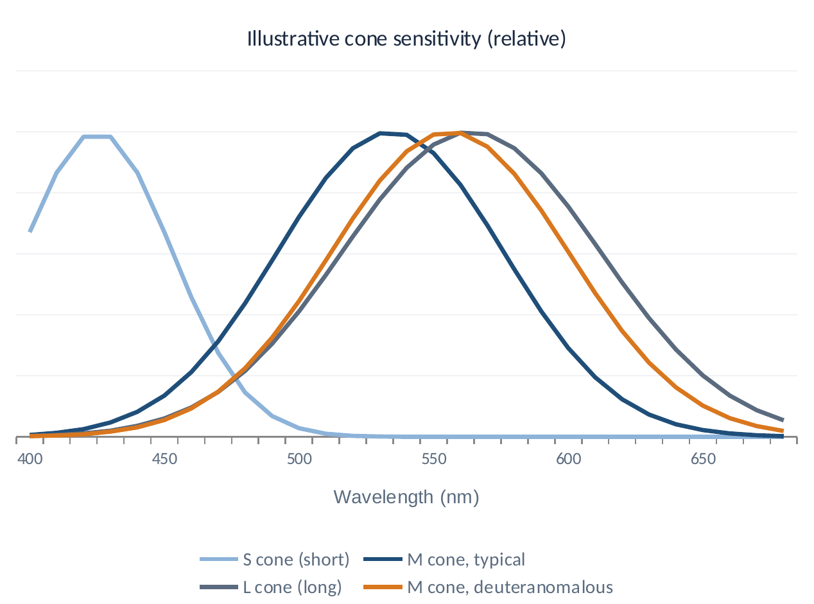
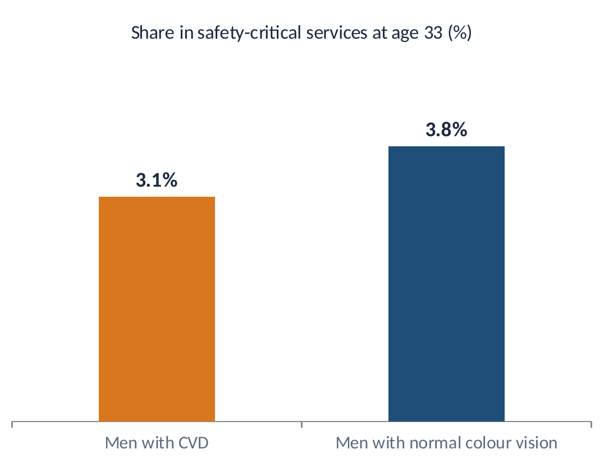

Presentation
EXECUTIVE SUMMARY
The evidence in one page: colour vision deficiency (CVD) at work
Medically
Partial CVD is a stable, inherited trait, not a disease. All three cone types are present; visual acuity and cognition are unaffected.
Diagnostically
An Ishihara test “fail” shows that CVD exists, not how severe it is or what the person can do. Severity-graded tests often reclassify applicants as safe.
Globally
The US, UK and Singapore allow people with CVD to study and practise medicine, a far more colour-demanding job than supply chain.

Practically
Supply chain runs on ERP data, dashboards and text-coded labels. Where colour appears, simple redundancy removes the risk at near-zero cost.
The ask: assess fitness on the real tasks of the supply chain role, not on a screening plate alone.
2
Key terms: CVD = colour vision deficiency, often called colour blindness. Ishihara = the dotted-number plate test used in most medical check-ups. Severity-graded test = a test that measures how mild or strong the CVD is (e.g. CAD, anomaloscope).
The evidence in one page: colour vision deficiency (CVD) at work
Medically
Partial CVD is a stable, inherited trait, not a disease. All three cone types are present; visual acuity and cognition are unaffected.
Diagnostically
An Ishihara test “fail” shows that CVD exists, not how severe it is or what the person can do. Severity-graded tests often reclassify applicants as safe.
Globally
The US, UK and Singapore allow people with CVD to study and practise medicine, a far more colour-demanding job than supply chain.
Practically
Supply chain runs on ERP data, dashboards and text-coded labels. Where colour appears, simple redundancy removes the risk at near-zero cost.
The ask: assess fitness on the real tasks of the supply chain role, not on a screening plate alone.
Key terms: CVD = colour vision deficiency, often called colour blindness. Ishihara = the dotted-number plate test used in most medical check-ups. Severity-graded test = a test that measures how mild or strong the CVD is (e.g. CAD, anomaloscope).
THE MEDICAL PICTURE
Partial CVD means one cone type is shifted, not missing

Inherited and X-linked
Present from birth; carried on the X chromosome, which is why it is far more common in men.
Anomalous trichromacy
All three cone types work. One is spectrally shifted, so certain red–green shades appear closer together.
4
Stable for life
Congenital CVD does not progress or damage the eye. Visual acuity is typically normal.

No link to ability
It has no relationship with intelligence, numeracy, planning, or analytical skill.
Key terms: Cone = a colour-sensing cell in the eye (S, M and L respond to short, medium and long wavelengths). Deuteranomalous = the M (“green”) cone is shifted. X-linked = carried on the X chromosome. Visual acuity = sharpness of vision.
Sources: [3] Tan et al. 2023; [1] Barbur & Rodriguez-Carmona 2017. Curves are a simplified illustration
Partial CVD means one cone type is shifted, not missing
Stable for life
Congenital CVD does not progress or damage the eye. Visual acuity is typically normal.
No link to ability
It has no relationship with intelligence, numeracy, planning, or analytical skill.
Inherited and X-linked
Present from birth; carried on the X chromosome, which is why it is far more common in men.
Anomalous trichromacy
All three cone types work. One is spectrally shifted, so certain red–green shades appear closer together.
Key terms: Cone = a colour-sensing cell in the eye (S, M and L respond to short, medium and long wavelengths). Deuteranomalous = the M (“green”) cone is shifted. X-linked = carried on the X chromosome. Visual acuity = sharpness of vision.
Sources: [3] Tan et al. 2023; [1] Barbur & Rodriguez-Carmona 2017. Curves are a simplified illustration
GLOBAL EVIDENCE
Decades of research: people with CVD work successfully

1958 British birth cohort: 6,422 males followed from birth to age 33
Population evidence
Cumberland, Rahi & Peckham (2005) concluded there is “little to be gained” from continuing school colour vision screening.

Legal evidence (UK)
In Bessell v Chief Constable of Dorset Police, the tribunal found coping strategies meant red–green CVD did not substantially affect day-to-day activities.
Medical profession
CVD occurs among doctors at the same rate as in the general population, and there is no clear evidence that it increases medical errors.
6
Key terms: Birth cohort = everyone born in one week (here, March 1958 in Britain) followed through life. Employment Tribunal = UK labour court. Coping strategy = a simple workaround, such as reading a label instead of relying on colour.
Sources: [7] Cumberland et al. 2005; [8] Bessell v Dorset Police 2017; [9] Spalding 1999; [3] Tan et al. 2023
Decades of research: people with CVD work successfully
Population evidence
Cumberland, Rahi & Peckham (2005) concluded there is “little to be gained” from continuing school colour vision screening.
Legal evidence (UK)
In Bessell v Chief Constable of Dorset Police, the tribunal found coping strategies meant red–green CVD did not substantially affect day-to-day activities.
Medical profession
CVD occurs among doctors at the same rate as in the general population, and there is no clear evidence that it increases medical errors.
1958 British birth cohort: 6,422 males followed from birth to age 33
Key terms: Birth cohort = everyone born in one week (here, March 1958 in Britain) followed through life. Employment Tribunal = UK labour court. Coping strategy = a simple workaround, such as reading a label instead of relying on colour.
Sources: [7] Cumberland et al. 2005; [8] Bessell v Dorset Police 2017; [9] Spalding 1999; [3] Tan et al. 2023
SUPPLY CHAIN REALITY
Where colour appears on a plant, a second cue already backs it up
Stack lights / andon
Fixed position (top, middle, bottom) and often an audible alarm; status also shown in text on the HMI.

Safety signs
ISO 3864 / ISO 7010 pair colour with shape: triangle = warning, circle = prohibition or mandatory action.

Pipe markings
Text legends naming the contents, plus flow arrows (e.g. ASME A13.1 practice).
Dashboards
Values, targets and variances are numbers; status can carry icons and text labels.
Stock & pallet status
Printed status text, batch codes and barcodes are scanned into the WMS.

Wiring & cables
Electrical maintenance scope, not supply chain; conductors are also labelled or numbered.
12
Key terms: Andon / stack light = a tower lamp that shows machine status. HMI = the machine's operator screen. ISO 3864 / ISO 7010 = international standards for safety colours and sign shapes. ASME A13.1 = a standard for labelling pipes.
Sources: [30] ISO 3864-1; [31] ISO 7010; [32] ASME A13.1; [6] Colour Blind Awareness
Where colour appears on a plant, a second cue already backs it up
Stack lights / andon
Fixed position (top, middle, bottom) and often an audible alarm; status also shown in text on the HMI.
Safety signs
ISO 3864 / ISO 7010 pair colour with shape: triangle = warning, circle = prohibition or mandatory action.
Pipe markings
Text legends naming the contents, plus flow arrows (e.g. ASME A13.1 practice).
Dashboards
Values, targets and variances are numbers; status can carry icons and text labels.
Stock & pallet status
Printed status text, batch codes and barcodes are scanned into the WMS.
Wiring & cables
Electrical maintenance scope, not supply chain; conductors are also labelled or numbered.
Key terms: Andon / stack light = a tower lamp that shows machine status. HMI = the machine's operator screen. ISO 3864 / ISO 7010 = international standards for safety colours and sign shapes. ASME A13.1 = a standard for labelling pipes.
Sources: [30] ISO 3864-1; [31] ISO 7010; [32] ASME A13.1; [6] Colour Blind Awareness
THE CANDIDATE
In my own words: working on a production floor with partial CVD
I have partial red–green colour vision deficiency. I work on a live production floor, and it has never stopped me from doing my job accurately, safely and objectively.
Operations Strategic Project, Philip Morris Indonesia (Link-up production floor)
How I work

Read status from systems
Uptime, yield, MTBF and waste come from data, where values and labels are explicit.
Use position, shape and text
Stack light order, sign shapes and printed legends, the same cues the plant is designed around.
Build accessible dashboards
My Power BI reports use labels and accessible palettes, which helps the whole team.
Confirm when it matters
In the rare case where colour alone carries meaning, I double-check.
14
Key terms: Uptime = share of planned time a line actually runs. Yield = good output as a share of input. MTBF = mean time between failures, a measure of machine reliability. HMI = the machine's operator screen.
In my own words: working on a production floor with partial CVD
I have partial red–green colour vision deficiency. I work on a live production floor, and it has never stopped me from doing my job accurately, safely and objectively.
Operations Strategic Project, Philip Morris Indonesia (Link-up production floor)
How I work
Read status from systems
Uptime, yield, MTBF and waste come from data, where values and labels are explicit.
Use position, shape and text
Stack light order, sign shapes and printed legends, the same cues the plant is designed around.
Build accessible dashboards
My Power BI reports use labels and accessible palettes, which helps the whole team.
Confirm when it matters
In the rare case where colour alone carries meaning, I double-check.
Key terms: Uptime = share of planned time a line actually runs. Yield = good output as a share of input. MTBF = mean time between failures, a measure of machine reliability. HMI = the machine's operator screen.
THE CANDIDATE
My experience maps to the end-to-end supply chain
Plan
MPS–MRP planning model; 12+ months of data; 5 scenarios (Danone)
Source
20+ key ingredients secured with a third-party manufacturer (Danone)
Make
Uptime, yield, MTBF and waste on the Link-up floor; 12 procedures tracked (PMI)
Deliver
10+ nodes, 4 transport modes, terminal allocation and routing (Pertamina)
Enable
Power BI, Power Automate, SQL, Python optimisation, NPV/IRR analysis
Colour requirement across all five stages: none of these outcomes depended on distinguishing red from green.
17
Key terms: Plan, Source, Make, Deliver, Enable = the stages of the SCOR model, the standard map of supply chain work. Node = a site in a network, such as a plant, depot or terminal.
My experience maps to the end-to-end supply chain
Plan
Source
Make
Deliver
Enable
MPS–MRP planning model; 12+ months of data; 5 scenarios (Danone)
20+ key ingredients secured with a third-party manufacturer (Danone)
Uptime, yield, MTBF and waste on the Link-up floor; 12 procedures tracked (PMI)
10+ nodes, 4 transport modes, terminal allocation and routing (Pertamina)
Power BI, Power Automate, SQL, Python optimisation, NPV/IRR analysis
Colour requirement across all five stages: none of these outcomes depended on distinguishing red from green.
Key terms: Plan, Source, Make, Deliver, Enable = the stages of the SCOR model, the standard map of supply chain work. Node = a site in a network, such as a plant, depot or terminal.
Try it
See it: drag the line
Adjust severity (currently 40%)
An exact value comes from a graded eye test (anomaloscope or CAD). 40% is an illustrative mid-range setting.
- What shifts
- What stays the same
Measured on four everyday work materials
| Material | Average colour change partial · full | Pixels changed >10% | Lowest text contrast original → partial | Information lost |
|---|
Contrast is the WCAG 2.x ratio between text and its background; 4.5:1 is the accepted minimum for readable text. Even at full deutan, the lowest value on these materials is 4.7:1. “Information lost: None” means every value, label, status word, light position and sign shape is identical in both views. All figures are measured live in your browser on the pictures above.